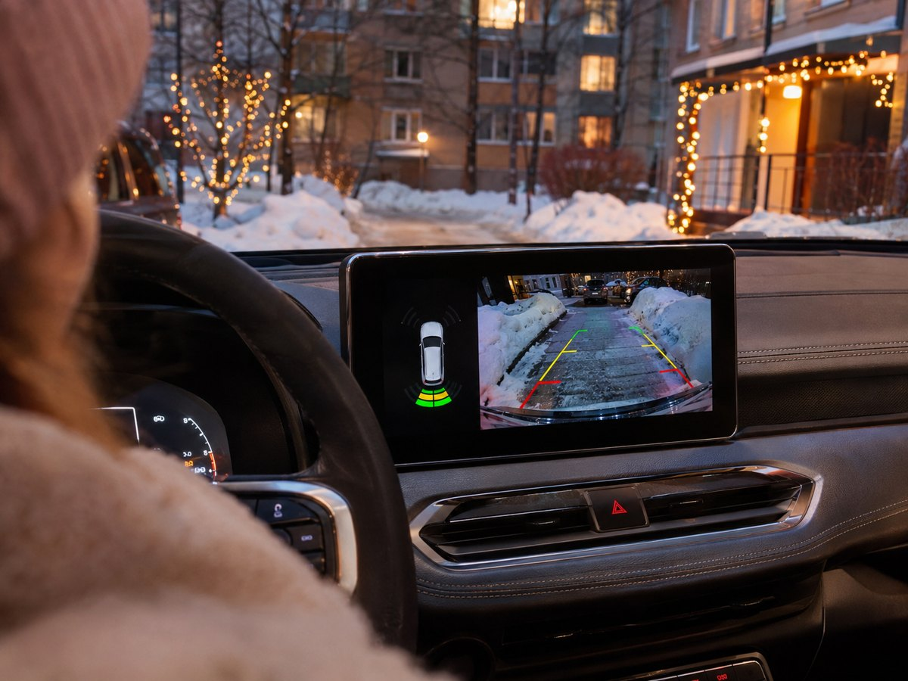
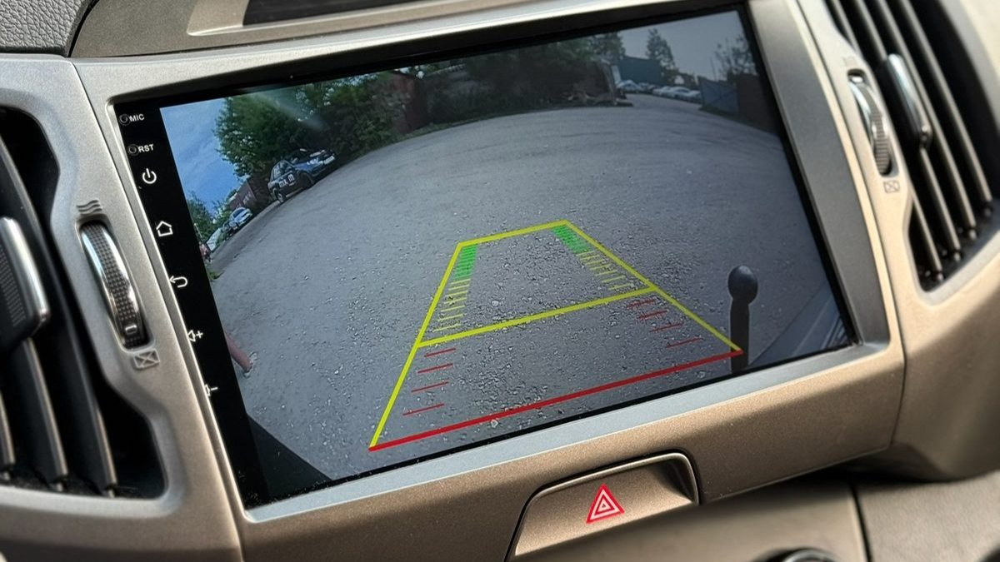
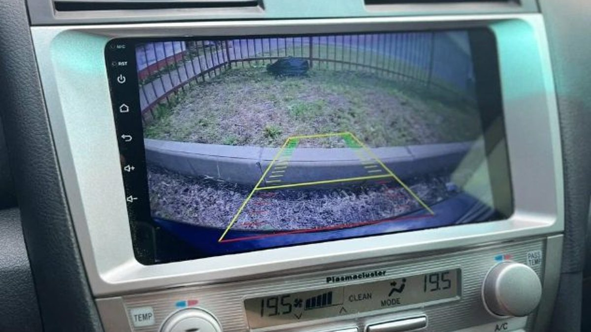

Половина седьмого вечера, двор уже тёмный. Свободное место одно: между сугробом, который дворник сгрёб к бордюру, и чужим кроссовером. Вы включаете заднюю, в зеркалах только оранжевый свет фонаря и снег, а сзади где-то торчит столбик ограждения, которого в такой темноте не видно. Тут и думаешь: экран с картинкой и линиями решил бы всё за три секунды.
Установка камеры заднего вида проще всего, когда её делают вместе с магнитолой: панель снята один раз, провод тянут один раз, экран и камера сразу настроены друг под друга. Но и испортить эту связку легко. Ниже разбираем, как камера устроена и как её подключают, какие форматы бывают, почему картинка мерцает или пропадает в мороз и что спросить у мастера до работы.

Схема у любой камеры одна. Камера сзади получает питание, снимает и отдаёт видеосигнал по отдельному проводу. Магнитола получает этот сигнал на видеовход и, кроме него, ещё одну команду: «включена задняя передача». По этой команде экран бросает навигатор или музыку и показывает картинку с камеры.
Отсюда три провода, на которых всё держится:
- Питание камеры. Обычно берут плюс с фонаря заднего хода, тогда камера живёт только на задней передаче.
- Видеосигнал. Отдельный экранированный кабель от камеры до магнитолы через весь салон.
- Сигнал заднего хода для магнитолы. Тонкий провод на вход «reverse» или команда по шине CAN через декодер, если машина это поддерживает.
Если любой из трёх сделан небрежно, камера будет работать «иногда», и искать причину придётся по всей длине машины.
Камера и магнитола говорят на одном языке, иначе вместо картинки будет чёрный экран или полосы.
- Аналоговые камеры CVBS. Старый стандарт, картинка невысокой чёткости. Работают почти с любой магнитолой, но на большом экране выглядят мыльно.
- AHD-камеры. Тоже передают сигнал по обычному кабелю, но с разрешением 720p или 1080p. Картинка заметно чётче, номер машины сзади читается. Главное условие: магнитола должна понимать AHD, причём именно то разрешение, которое выдаёт камера.
- Цифровые камеры с собственным разъёмом. Делаются под конкретную линейку магнитол и подключаются без переходников.
Отсюда первая ошибка: купить на маркетплейсе камеру с красивыми цифрами в описании, а дома выяснить, что магнитола её формат не видит или видит в урезанном виде.
Если вы ставите android-магнитолу, логично брать камеру из той же экосистемы. Камера заднего вида Teyes делается под их магнитолы, например Teyes CC3 и CC4: формат совпадает, в меню сразу есть нужные настройки, не нужно подбирать режим вручную. Такие камеры бывают в корпусе «шайба» для установки над номером и в виде накладки под конкретную модель машины.
Сторонняя AHD-камера тоже будет работать, если формат и разрешение совпадают. Тогда в настройках магнитолы выбирают тип сигнала, и мастер проверяет картинку на стоянке до сборки панели.
Отдельный случай – камера, которая уже стоит в машине с завода. При замене штатной магнитолы её часто можно сохранить, но заводские камеры бывают в своих форматах, иногда им нужно особое питание. Для них есть переходники и адаптеры под модель. Спросите у мастера заранее, сохранится ли ваша родная камера и что для этого понадобится.
Когда магнитолу и камеру ставят вместе, работа выглядит так.
1. Снимают центральную панель, достают старую магнитолу, подключают новую через переходник под модель.
2. Снимают обшивку крышки багажника или пятой двери, ставят камеру: над номером, в подсветку номера или в ручку багажника, если для модели есть такая накладка.
3. Прокладывают видеокабель из багажника вперёд под порогами, вдоль штатного жгута, а не под ковром на пути ног.
4. Подключают питание камеры и сигнал заднего хода.
5. Включают заднюю передачу, настраивают зеркальность изображения, угол и парковочные линии.
6. Только после проверки собирают панели.
Самое уязвимое место – переход провода из кузова в крышку багажника. Крышка открывается тысячи раз в год, и провод там постоянно сгибается. Правильно его ведут через штатную резиновую гофру вместе с заводским жгутом. Провод, пущенный в обход гофры или зажатый уплотнителем, перетирается, и через одну-две зимы картинка пропадает.

Питание от фонаря заднего хода кажется самым простым решением. Но на многих современных машинах лампы контролирует электронный блок: он подаёт на фонарь не ровный ток, а импульсы, чтобы проверять, жива ли лампа. Для лампы это незаметно, а камера от таких импульсов мерцает, перезагружается или показывает картинку с задержкой.
Варианты правильного подключения камеры заднего вида:
- Через реле или фильтр. Фонарь только включает реле, а камера получает ровное питание из другой цепи.
- По шине CAN. Декодер (канбокс) сообщает магнитоле, что включена задняя, а камера получает питание отдельно. Заодно можно получать угол поворота руля для динамических линий.
- Постоянное питание камеры с включением по команде магнитолы. Картинка появляется быстрее, без паузы на запуск камеры.
Ещё один источник помех – видеокабель, проложенный вплотную к силовым проводам. На экране тогда бегут полосы, особенно при работающем вентиляторе печки или подогреве стекла. Кабель ведут отдельно или пересекают силовые жгуты под прямым углом.
У камеры заднего вида угол обзора обычно 120–170 градусов. Чем шире угол, тем больше видно по бокам, но тем сильнее «рыбий глаз»: прямой бордюр выглядит дугой, а расстояния на краях искажены.
Парковочные линии бывают двух видов:
- Статичные. Рисуют полосу шириной с машину и отметки расстояния. Их настраивают по факту установки: ставят машину у стены или у разметки и подгоняют.
- Динамические. Изгибаются вслед за поворотом руля и показывают, куда поедет машина. Для них магнитоле нужен угол поворота руля по шине CAN, поэтому они работают не на каждой машине.
Ночью картинку тянет яркость камеры и подсветка сзади. В тёмном дворе свет фонаря заднего хода и подсветка номера дают достаточно для хорошей камеры. Инфракрасная подсветка в камере у номера часто мешает: она отражается от номерной таблички и засвечивает изображение.
Зимой в Ярославле реагенты и снежная каша добираются до всего, что висит сзади, поэтому жалобы на камеру к весне обычны. Простая диагностика, которую можно провести самому:
- Экран не переключается на камеру при задней передаче. Проблема в сигнале заднего хода: провод, предохранитель или декодер.
- Экран переключается, но чёрный или пишет «нет сигнала». Камера не получает питание или видеокабель оборван. Чаще всего обрыв в гофре крышки багажника.
- Картинка мерцает или появляется с задержкой. Питание от фонаря с контролем ламп, нужно реле или фильтр.
- Картинка мутная или с пятнами. Сначала протрите объектив: соль и грязь на стекле дают именно такой эффект. Если внутри объектива конденсат, нарушена герметичность камеры.
- Работала, а в мороз пропала. Окисленный разъём или скрутка, которая на холоде теряет контакт.
Если не работает камера заднего вида после чужой установки, первым делом смотрят переход провода в крышку и места соединений. Скрутки, замотанные изолентой, на улице живут недолго.
- Какой формат камеры поддерживает выбранная магнитола и какое разрешение?
- Откуда будет питание камеры и есть ли на моей машине контроль ламп?
- Как пройдёт провод в крышку багажника: через штатную гофру или иначе?
- Будут ли динамические линии на моей машине?
- Сохранится ли заводская камера, если она есть?
- Как соединены провода сзади: пайка, термоусадка, герметичные разъёмы?
Сколько стоит установка камеры заднего вида в Ярославле вместе с магнитолой? Стоимость считают после осмотра. В неё входят камера и её формат, магнитола и переходник под модель, способ питания (реле, декодер CAN), сложность разборки крышки багажника и место установки камеры. На машинах, где панель и багажник разбираются тяжело, работы больше, поэтому цифра вслепую обычно расходится с итоговой.
Можно ли поставить камеру к штатной магнитоле, не меняя её? Иногда да, если у штатного головного устройства есть видеовход и его можно включить. Часто нужен специальный адаптер под модель. Это проверяют по вашей комплектации.
Что лучше: камера над номером или в ручке багажника? В ручке камера аккуратнее выглядит и меньше пачкается, но такие накладки есть не для всех моделей. Над номером ставят на любую машину. Важно, чтобы камера не закрывала номер.
Нужна ли камера, если есть парктроники? Это разные помощники. Парктроник пищит при приближении к препятствию, камера показывает, что именно сзади: ребёнок, столбик, бордюр под снегом. Вместе они дополняют друг друга.
Почему зимой камера показывает размытую картинку? На объектив оседает соль с дороги. Перед парковкой достаточно протереть стекло камеры салфеткой.
Студия «Звук на Волге», Ярославль, проспект Октября, 82б. Пн–пт 8:30–20:00, сб–вс 10:00–19:00. Подбираем android-магнитолу под вашу машину, ставим и настраиваем, подключаем камеру заднего вида и регистратор. Камеры, парктроники и систему 360 ставим и отдельно. На все работы и оборудование даём гарантию, а после установки поможем поменять настройки и ответим на вопросы.
Подобрать комплект и записаться: android-магнитола с камерой заднего вида в Ярославле. Телефон +7 902 220-75-55, сообщения в ВК: vk.me/avtostil_yaroslavl.
Многие ещё помнят нас как «Автостиль». Мы обновили название: занимаемся звуком в Ярославле, поэтому теперь мы «Звук на Волге». Адрес прежний.